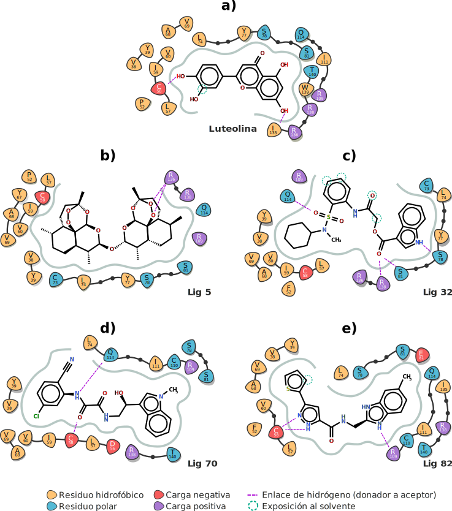

Preparación de los sistemas
El siguiente script fue utilizado para la generación de los archivos de topología y parámetros de campo de fuerza (.incprd y .prmtop) equivalentes a la proteína solvatada. Para ello se utilizó AmberTools y la consola tleap. Los análisis de esta sección fueron realizados en un equipo Aspire R14 Intel® Celeron dualcore 1.50GHz.

El siguiente script fue utilizado para la generación de los archivos de topología y parámetros de campo de fuerza (.incprd y .prmtop) equivalentes a la proteína solvatada. Para ello se utilizó AmberTools y la consola tleap. Los análisis de esta sección fueron realizados en un equipo Aspire R14 Intel® Celeron dualcore 1.50GHz.